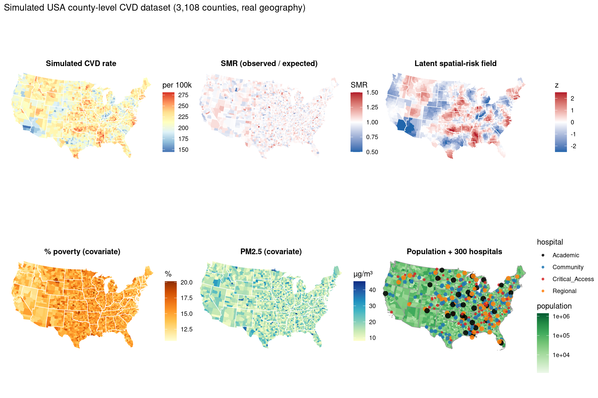

library(tidyverse)
library(sf)
library(patchwork)
set.seed(42)
out_dir <- file.path(tempdir(), "mod07")
dir.create(out_dir, showWarnings = FALSE, recursive = TRUE)
theme_set(
theme_minimal(base_size = 11) +
theme(
plot.background = element_rect(fill = "white", colour = NA),
panel.background = element_rect(fill = "white", colour = NA),
panel.grid.minor = element_blank()
)
)
theme_map <- function() {
theme_void(base_size = 11) +
theme(
plot.background = element_rect(fill = "white", colour = NA),
panel.background = element_rect(fill = "white", colour = NA),
plot.title = element_text(face = "bold", size = 11, hjust = 0.5),
plot.subtitle = element_text(size = 9, hjust = 0.5),
legend.position = "right"
)
}
raw <- read_csv("Data/usa_data.csv", show_col_types = FALSE)
shp <- st_read("Data/US_COUNTY.shp", quiet = TRUE)
shp$FIPS <- as.integer(shp$FIPS)
# Shannon County SD (46113) was renamed Oglala Lakota (46102)
shp$FIPS[shp$FIPS == 46113] <- 46102
gdf <- shp %>%
inner_join(raw, by = c("FIPS" = "fips"))
N <- nrow(gdf)
# Centroids in NAD83 Albers metres (EPSG:5070); lon/lat via WGS84
xy <- st_coordinates(st_centroid(st_geometry(gdf)))
pts_ll <- st_transform(st_as_sf(tibble(x = xy[, 1], y = xy[, 2]),
coords = c("x", "y"), crs = 5070), 4326)
lon <- st_coordinates(pts_ll)[, 1]
lat <- st_coordinates(pts_ll)[, 2]
# Kernel smoother on Albers centroids (bw = 200 km, k = 60)
spatial_smooth <- function(vals, xy_m, bw = 200000, k = 60) {
d <- as.matrix(dist(xy_m))
n <- nrow(xy_m)
out <- numeric(n)
for (i in seq_len(n)) {
idx <- order(d[i, ])[seq_len(k)]
di <- d[i, idx]
w <- exp(-(di^2) / (2 * bw^2))
out[i] <- sum(vals[idx] * w) / sum(w)
}
as.numeric(scale(out))
}
pct_poverty <- 10 + 8 * rbeta(N, 2, 5) + 3 * sin(lon / 20)
pct_uninsured <- 8 + 6 * rbeta(N, 2, 4) + 0.3 * pct_poverty
pm25 <- 8 + 4 * rgamma(N, 2, 1)
population <- as.integer(rlnorm(N, 10.5, 1.0))
spatial_risk <- spatial_smooth(rnorm(N), xy, bw = 200000, k = 60)
cvd_rate <- 180 + 1.2 * pct_poverty + 0.8 * pct_uninsured + 0.5 * pm25 +
15 * spatial_risk + rnorm(N, 0, 12)
expected <- (cvd_rate / 100000) * population * 5
observed <- rpois(N, expected)
smr <- observed / pmax(expected, 1)
gdf$county_id <- sprintf("%05d", as.integer(gdf$FIPS))
gdf$fips <- as.integer(gdf$FIPS)
gdf$lon <- lon
gdf$lat <- lat
gdf$x_m <- xy[, 1]
gdf$y_m <- xy[, 2]
gdf$pct_poverty <- pct_poverty
gdf$pct_uninsured <- pct_uninsured
gdf$pm25 <- pm25
gdf$population <- population
gdf$spatial_risk <- spatial_risk
gdf$cvd_rate <- cvd_rate
gdf$observed <- observed
gdf$expected <- expected
gdf$smr <- smr
# Hospitals: population-weighted county sites + local Albers jitter
set.seed(5)
N_HOSP <- 300
pick <- sample.int(N, N_HOSP, replace = TRUE, prob = population / sum(population))
jit <- matrix(rnorm(N_HOSP * 2, 0, 15000), ncol = 2)
hosp_type <- sample(
c("Critical_Access", "Community", "Regional", "Academic"),
N_HOSP, replace = TRUE, prob = c(0.30, 0.40, 0.20, 0.10)
)
hosp_beds <- dplyr::case_when(
hosp_type == "Academic" ~ as.integer(runif(N_HOSP, 400, 800)),
hosp_type == "Regional" ~ as.integer(runif(N_HOSP, 150, 400)),
hosp_type == "Community" ~ as.integer(runif(N_HOSP, 50, 200)),
TRUE ~ as.integer(runif(N_HOSP, 25, 75))
)
hosp <- st_sf(
tibble(
type = hosp_type,
beds = hosp_beds,
x_m = xy[pick, 1] + jit[, 1],
y_m = xy[pick, 2] + jit[, 2]
),
geometry = st_sfc(
lapply(seq_len(N_HOSP), function(i) {
st_point(c(xy[pick[i], 1] + jit[i, 1], xy[pick[i], 2] + jit[i, 2]))
}),
crs = st_crs(gdf)
)
)
hosp_ll <- st_transform(hosp, 4326)
hosp$lon <- st_coordinates(hosp_ll)[, 1]
hosp$lat <- st_coordinates(hosp_ll)[, 2]
cat(sprintf("N=%d counties | %d hospitals | CVD=%.1f/100k\n",
N, N_HOSP, mean(cvd_rate)))N=3108 counties | 300 hospitals | CVD=217.4/100kcat(sprintf(
" poverty %.1f%% | uninsured %.1f%% | PM2.5 %.1f | SMR mean %.2f\n",
mean(pct_poverty), mean(pct_uninsured), mean(pm25), mean(smr)
)) poverty 14.8% | uninsured 14.4% | PM2.5 16.0 | SMR mean 1.00write_csv(
st_drop_geometry(gdf) %>%
select(county_id, fips, county, state_abbr, lon, lat, x_m, y_m,
pct_poverty, pct_uninsured, pm25, population, cvd_rate,
observed, expected, smr, spatial_risk),
file.path(out_dir, "usa_county_sim.csv")
)
write_csv(
st_drop_geometry(hosp) %>% select(lon, lat, type, beds, x_m, y_m),
file.path(out_dir, "usa_hospitals_sim.csv")
)
states <- gdf %>%
group_by(STATE) %>%
summarise(geometry = st_union(geometry), .groups = "drop")
sf_choro <- function(gdf_in, column, title, palette = "YlOrRd",
direction = 1, legend = NULL, limits = NULL,
midpoint = NULL) {
p <- ggplot(gdf_in) +
geom_sf(aes(fill = .data[[column]]), colour = NA, linewidth = 0) +
geom_sf(data = states, fill = NA, colour = "white", linewidth = 0.3) +
labs(title = title) +
theme_map()
if (!is.null(midpoint)) {
p <- p + scale_fill_gradient2(
name = legend, midpoint = midpoint,
low = "#2166AC", mid = "white", high = "#B2182B",
limits = limits, oob = scales::squish
)
} else {
p <- p + scale_fill_distiller(
name = legend, palette = palette, direction = direction,
limits = limits, oob = scales::squish
)
}
p
}
p_cvd <- sf_choro(gdf, "cvd_rate", "Simulated CVD rate", "RdYlBu", -1, "per 100k")
p_smr <- sf_choro(gdf, "smr", "SMR (observed / expected)",
legend = "SMR", limits = c(0.5, 1.5), midpoint = 1)
p_risk <- sf_choro(gdf, "spatial_risk", "Latent spatial-risk field",
legend = "z", limits = c(-2.5, 2.5), midpoint = 0)
p_pov <- sf_choro(gdf, "pct_poverty", "% poverty (covariate)", "YlOrBr", 1, "%")
p_pm <- sf_choro(gdf, "pm25", "PM2.5 (covariate)", "YlGnBu", 1, "µg/m³")
type_cols <- c(
Critical_Access = "#d62728", Community = "#1f77b4",
Regional = "#ff7f0e", Academic = "#000000"
)
p_pop <- ggplot(gdf) +
geom_sf(aes(fill = population), colour = NA, linewidth = 0) +
geom_sf(data = states, fill = NA, colour = "grey60", linewidth = 0.3) +
geom_sf(
data = hosp, aes(colour = type, size = sqrt(beds)),
shape = 16, alpha = 0.85
) +
scale_fill_distiller(
name = "population", palette = "Greens", direction = 1, trans = "log10"
) +
scale_colour_manual(name = "hospital", values = type_cols) +
scale_size_continuous(range = c(0.6, 3.5), guide = "none") +
labs(title = "Population + 300 hospitals") +
theme_map() +
theme(legend.box = "vertical")
p_atlas <- (p_cvd | p_smr | p_risk) / (p_pov | p_pm | p_pop) +
plot_annotation(
title = "Simulated USA county-level CVD dataset (3,108 counties, real geography)"
)
print(p_atlas)
ggsave(file.path(out_dir, "county_cvd_atlas.png"), p_atlas,
width = 19, height = 11, dpi = 120)